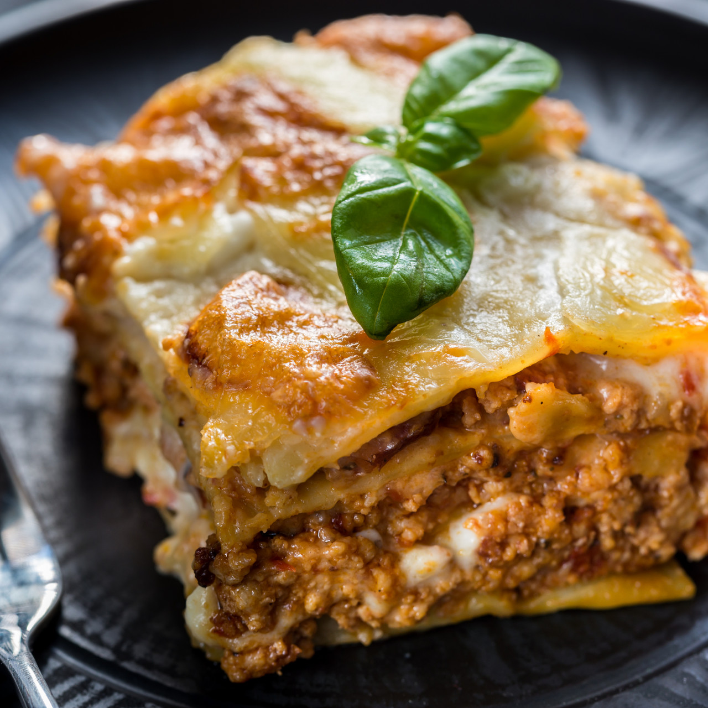

Lasagna

A dish made by baking such pasta with layers of sauce and fillings such as cheese or meat.
A family-pleasing version of lasagna is made with lean ground beef, whole wheat lasagna noodles, prepared sauce, and plenty of mozzarella for a dish that's easy yet hearty.
Ingredients
- 1 (16 ounce) package lasagna noodles
- 2 tablespoons vegetable oil
- 1 pound fresh mushrooms, sliced
- ¾ cup chopped green bell pepper
- ¾ cup chopped onion
- 3 cloves garlic, minced
- 2 (26 ounce) jars pasta sauce
- 1 teaspoon dried basil
- 1 (15 ounce) container part-skim ricotta cheese
- 4 cups shredded mozzarella cheese, divided
- 2 eggs
- ½ cup grated Parmesan cheese
Steps
- Cook lasagna noodles in a large pot of boiling water for 10 minutes, or until al dente. Rinse with cold water, and drain.
- Heat oil in a large saucepan. Add mushrooms, green peppers, onion, and garlic; cook and stir until tender, about 5 minutes. Stir in pasta sauce and basil; bring to a boil. Reduce heat, and simmer for 15 minutes.
- While the sauce is simmering, mix together ricotta, 2 cups mozzarella cheese, and eggs in a medium bowl.
- Preheat the oven to 350 degrees F (175 degrees C). Grease a 9x13-inch baking dish.
- Spread 1 cup cooked tomato and vegetable sauce into the bottom of the prepared baking dish. Lay down 1/2 of the lasagna noodles and layer 1/2 each of the ricotta mix, sauce, and Parmesan cheese on top. Repeat layering again with noodles, ricotta mix, sauce, and Parmesan cheese. Top with remaining 2 cups mozzarella.
- Bake in the preheated oven, uncovered, for 40 minutes. Let stand for 15 minutes before serving.